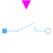
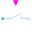

IdealOpeningSwitchIdeal electrical opener |

|
Information
This information is part of the Modelica Standard Library maintained by the Modelica Association.
The ideal opening switch has a positive pin p and a negative pin n. The switching behaviour is controlled by the input signal control. If control is true, pin p is not connected with negative pin n. Otherwise, pin p is connected with negative pin n.
In order to prevent singularities during switching, the opened
switch has a (very low) conductance Goff
and the closed switch has a (very low) resistance Ron.
The limiting case is also allowed, i.e., the resistance Ron of the
closed switch could be exactly zero and the conductance Goff of the
open switch could be also exactly zero. Note, there are circuits,
where a description with zero Ron or zero Goff is not possible.
Please note:
In case of useHeatPort=true the temperature dependence of the electrical
behavior is not modelled. The parameters are not temperature dependent.
Use with care: This switch is only intended to be used for structural changes, not for fast switching sequences, due to the quasi-static formulation.
Parameters (4)
| useHeatPort |
Value: false Type: Boolean Description: = true, if heatPort is enabled |
|---|---|
| T |
Value: 293.15 Type: Temperature (K) Description: Fixed device temperature if useHeatPort = false |
| Ron |
Value: 1e-5 Type: Resistance (Ω) Description: Closed switch resistance |
| Goff |
Value: 1e-5 Type: Conductance (S) Description: Opened switch conductance |
Connectors (4)
| pin_p |
Type: PositivePin Description: Positive quasi-static single-phase pin |
|
|---|---|---|
| pin_n |
Type: NegativePin Description: Negative quasi-static single-phase pin |
|
| heatPort |
Type: HeatPort_a Description: Conditional heat port |
|
| control |
Type: BooleanInput Description: true => switch open, false => p--n connected |
Components (5)
| v |
Type: ComplexVoltage Description: Complex voltage |
|
|---|---|---|
| i |
Type: ComplexCurrent Description: Complex current |
|
| s |
Type: Complex Description: Auxiliary variable |
|
| unitVoltage |
Type: ComplexVoltage |
|
| unitCurrent |
Type: ComplexCurrent |
Used in Components (1)
|  |
Modelica.Electrical.QuasiStatic.Polyphase.Ideal Polyphase ideal opener |